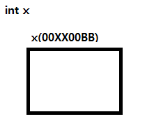
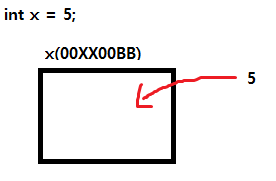
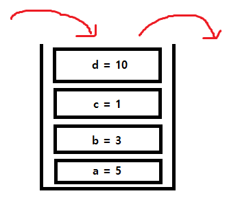
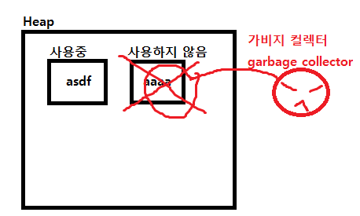

변수
프로그래밍 언어에서의 변수는
메모리 공간을 만드는겁니다.

int x를 이용해 변수를 선언했을 때 메모리 공간이 생기며 메모리 주소도 같이 생깁니다.
이 메모리 주소는 메모리 공간을 가리키는 하나의 지표가 됩니다.

그리고 대입 연산자를 통해 우리는 이 메모리 공간에 값을 넣어 줄 수 있습니다. x 그 자체로는 메모리 공간을 가리키고 있으니깐요.
변수를 사용할 때는 주의할 점이 있는데요.
선언을 하는 그 순간 이 변수에 아무 데이터도 넣지 않으면 쓰레기 값이 들어갑니다. 그래서 의도치 않은 동작을 할 때가 있습니다.
그래서 보통 변수를 선언할 때 초기화(Initialization)라는 작업을 해줍니다.
초기화 작업은 그저 선언을 했으면 그 데이터에 어떠한 값을 넣는 행위입니다.
보통은 0을 넣어서 초기화를 해주죠. 변수의 초기화 습관은 들이시는게 좋습니다.
그리고 변수는 같은 자료형을 가지는 변수는 동시에 선언이 되고 동시에 초기화가 가능합니다.
int a, b, c;
a = 30; b = 40; c = 50;
int a = 30, b = 40, c = 50;
C# 스택, 힙영역
C# 에서는 값 형식과 참조 형식이 있는데요
값 형식은 변수가 값을 담는 데이터 형식
참조 형식은 변수가 값 대신 값이 있는 곳의 위치(참조)를 담는 데이터 형식
이 역할을 보니 뭔가 떠오르지 않나요?
마치 일반 변수와 참조자가 생각나는군요
값 형식은 일반적인 변수들이 가지는 특징이고
참조 형식은 값의 주소값(위치)를 담는 참조자의 역할의 특징이 보이네요.
이 둘은 메모리 영역중 각각 한 부분씩 차지합니다.
값 형식은 스택(Stack) 참조 형식은 힙(Heap)
스택(Stack)
스택이란
FILO(First In Last Out)의 구조와
LIFO(Last In First Out)의 구조를 가지고 있습니다.
두개다 같은 말입니다.

모든 변수들은 스택에 쌓이게 되고 이 스택은 프로그램이 종료되는 시점
혹은 C++에서 사용하던 함수처럼 스택으로 관리가되는 구역이
종료되는 시점에서 스택에 저장되있는 모든 변수는 메모리에서 제거가 됩니다.
이게
스택(Stack)입니다.
힙(Heap)
이 힙의 영역은 C++ 언어를 공부했던 분들이라면 필수적으로 기억을 하고 있을 텐데요. 동적 할당을 할 때 할당되는 영역이 힙이였죠.
C# 도 똑같습니다. 힙 영역에 집어넣고 필요 할 때 마다 사용을 합니다.
다만 다른 점이 있다면 C++ 은 사용자 프로그래머가 직접 수거를 해줘야 합니다.
하지만 C# 은 CLR의 가비지 컬렉터가 있습니다.
힙 영역에는 들어가 있는데 더 이상 사용하지 않으면 쓰레기로 인식해 수거를 해주죠.
메모리 관리가 좀 더 편해졌다고 보면 되겠죠.

스택과 힙의 역할을 보자면
잠깐의 연산을 위해 선언한 변수같은 경우는 스택을 이용하고
그로인해 결과를 얻고 이 결과값이 지속적으로 필요하다면 힙 영역에 저장
그 후 필요 없다면 사용하지 않고 이는 가비지 컬렉터가 수거해감
스택 영역과 힙 영역의 역할이 어떤건지 단편적으로 알아봤습니다.